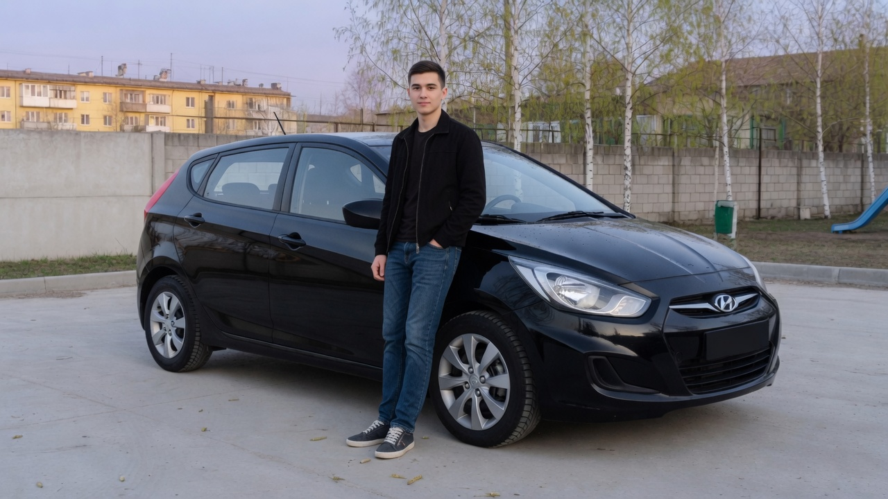

01 — Двор
Ключ от чёрного хэтчбека
Этой весной отец отдал Кириллу Solaris 2013 года. Это ещё дорестайлинговый кузов: вытянутые фары, широкая решётка и короткая корма, а не седан.
Во дворе длина имеет значение. Хэтчбек разворачивается в два приёма там, где длинной машине уже тесно. Багажник при этом остаётся: сумки с рынка встают, если сложить спинку.
Чёрная краска не прощает пыль. Поэтому суббота часто начинается с губки, и только потом Кирилл садится за руль.
